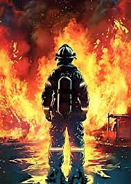
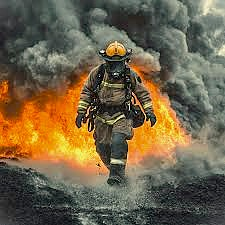
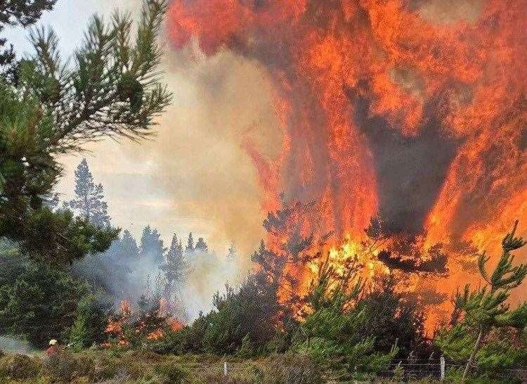

My topic is intresting. Here is one fact, full-time firefighters earn $46 per hour. Here is another intresting fact, Firefighters wear gear that weighs 50-80 lbs.
Did you know that Firefighters have to wear a protective mask to help with the heat of a fire so that they dont get hurt in the process of putting out the fire? That is so amazing! I like my topic.
Firefighting is a great job that serves as a source of safety bravery, physical strength, and specialized skills. Firefighters also help with putting out many kinds of fires, some examples of fires that they put out are wildfires, structure fires, alarm calls, hazardous material skills, car crashes, and many other things. They also help people live in a better, and safer world with less harm in knowing that there are fires, and that firefighters are alway there to help us.
Firefighting is an essential, high-stakes profession dedicated to protecting lives, property, and the environment from dangerous emergenceis. Modern first responders do far more than extinguish structural and wildland blazes; they serve as all-hazard emergency personnel, frequently providing medical assistance, handaling hazardous materials, and preforming vehichle rescues.


